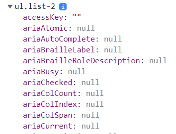

Домашка JS (масиви)
1 - поверне 4
2, 3 та 4 задачі у файлі js
5 - previousValue на початку роботи метода дорівнює 9
1 - поверне 4
2, 3 та 4 задачі у файлі js
5 - previousValue на початку роботи метода дорівнює 9
1 - Коля
2 - так, правильно
3 - ні, неправильно, функцію не можна викликати до створення функціонального виразу
4 - перенести виклик функції у блок if де вона була оголошена або оголосити змінну до блоку і привласнити їй функцію
у файлах js та html
Застосувала метод querySelector тому, що при використанні методу querySelectorAll з'являлася помилка:
Елемент буде додано в кінець списку:
Не розумію чому при спробі вивести елемент в консоль виводиться не сам елемент, а список усіх доступних властивостей, так наче я написала console.dir(listTwo);. Причому спочатку виводиться елемент, а після оновлення сторінки він перетворюється на список усіх доступних властивостей.
в задачі №2 така ж сама проблема
Прокоментуйте, будь ласка, чому так.
усі задачі у файлі js